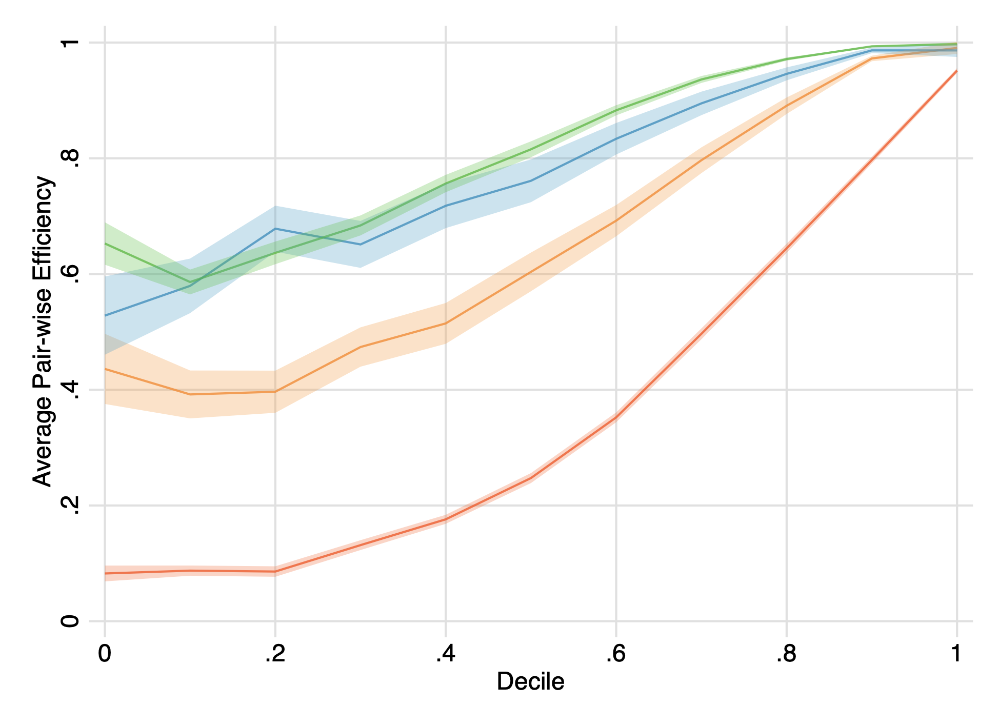

American Economic Review · 2026

Take the Goods and Run: Contracting Frictions and Market Power in Supply Chains
A dynamic model of self-enforced relational contracts when sellers hold market power and courts cannot enforce agreements. Using transaction-level Ecuadorian manufacturing data, I find bilateral trade starts inefficiently low and converges toward efficiency over time.